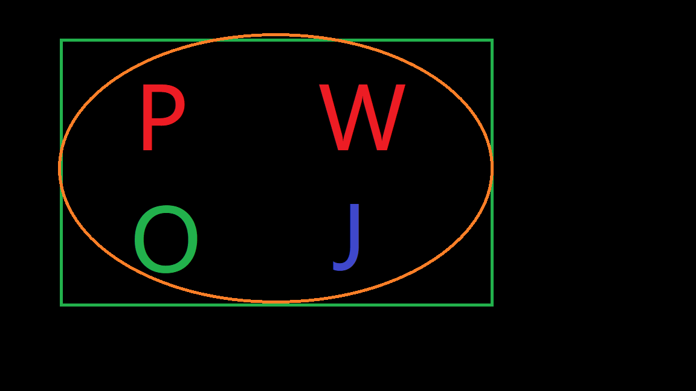
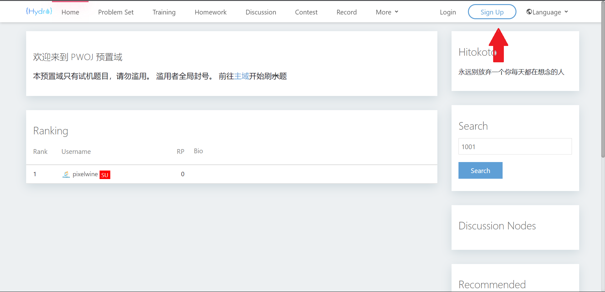
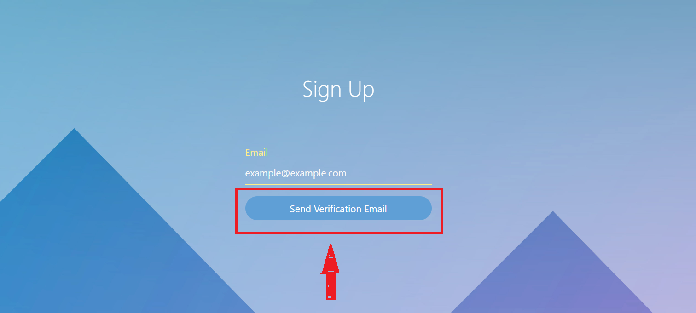
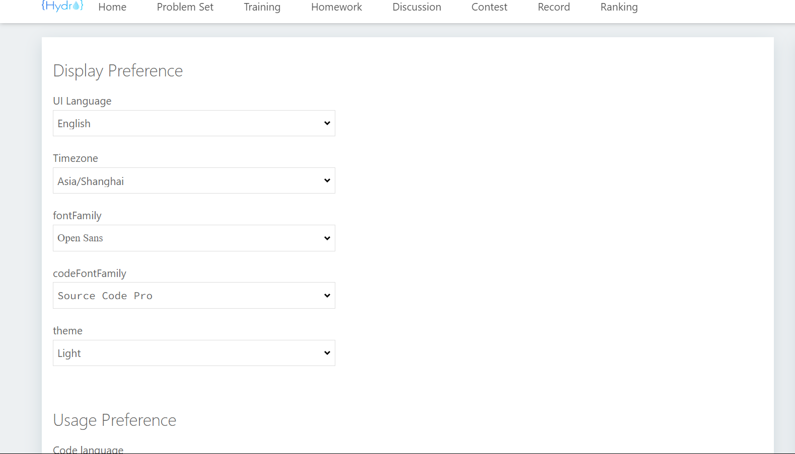
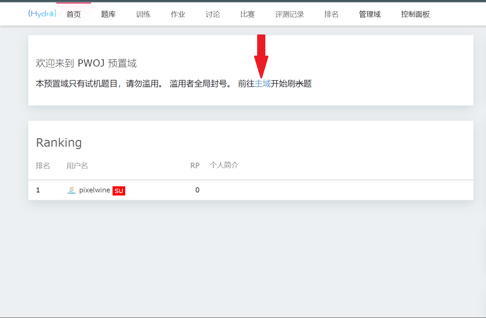

PWOJ 正式运行
本文最后更新于：2 months ago
PW Online Judge of Hydro
由于维护困难等原因，已决定弃用 PWOJ 自有服务器。PWOJ 自有服务器将在 2022 年 5 月 14 日停止服务。
故下方所有有关 PW Team Online Judge 的内容均已失效。
已将原 PWOJ 主域中的所有题目迁移至 HydroOJ 的 PWOJ 域，可到 HydroOJ 的 PWOJ 域参与练习。
江湖路远 就此别过 山高水长 后会无期
访问方式
PW Team Online Judge
《开屏雷击》

是的，你没有看错，这个很好看的 Logo 就是由本人设计的.
如何构建
以后将会写一篇文章专门讲怎么搭建（咕咕咕）。
如何访问
IP: 43.132.160.117:8888
Nginx 反代仍在踩坑中.
如何加入
首先，进行注册.


（由于咕咕咕的原因，现在还没有邮箱验证功能）
注册完毕后进行显示配置.

点击页面最下方的 Save All Changes 即可保存配置.
配置完毕后再访问主站，即可开始愉快地刷水题~
如何刷水题
根据图片提示进入主域开始刷题。

如何自己创建题目
可以自己创建域。步骤参考HydroOJ.
如果想要把题目加入主域，请通过本博客的 About 页面最下方的联系方式联系我.
The End.
Unless otherwise stated, all articles of PixEL | Blog use the CC BY-NC-SA 4.0 Agreement. Please indicate the source for reprinting.